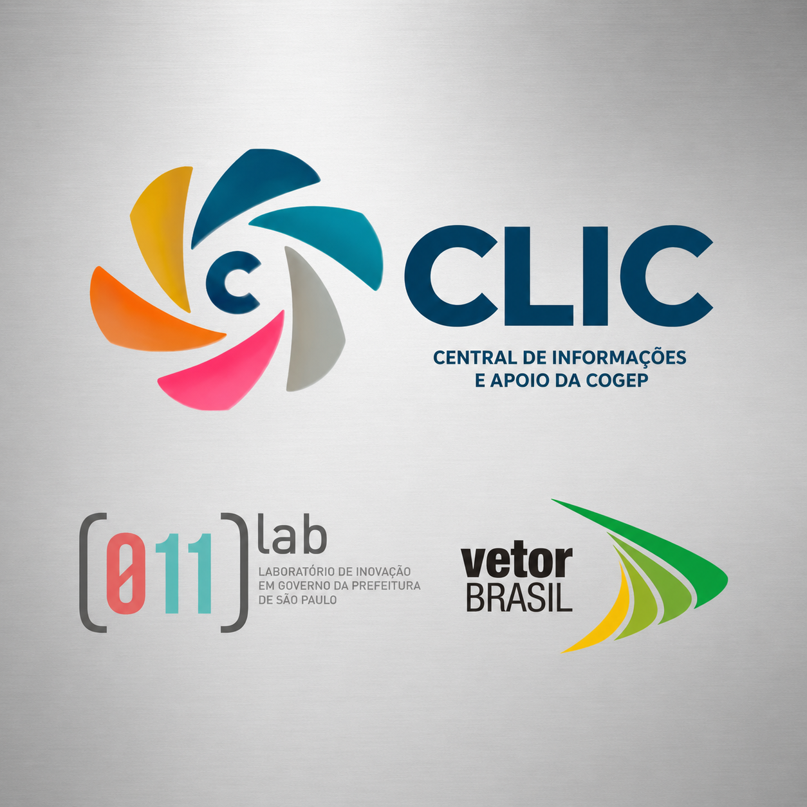

Projeto
Vetor Brasil / Motriz / Prefeitura de São Paulo
Portal CLIC
Estruturar plataforma de gestão de pessoas no contexto de inovação e modernização administrativa municipal.
Parceiros: Vetor Brasil, Motriz, Secretaria Municipal de Gestão de São Paulo

Detalhes
- Atuação
- Trainee em gestão pública, gestão de projetos e inovação, com liderança do projeto e estruturação do Portal CLIC.
- Entregas
- Diagnóstico institucional, planejamento estratégico, modernização administrativa, apoio ao Programa de Residência em Gestão Pública e articulação intersetorial.
- Temas
- Política de cotas públicas, direitos humanos, cidadania, reestruturação de cargos e salários e projetos transversais.